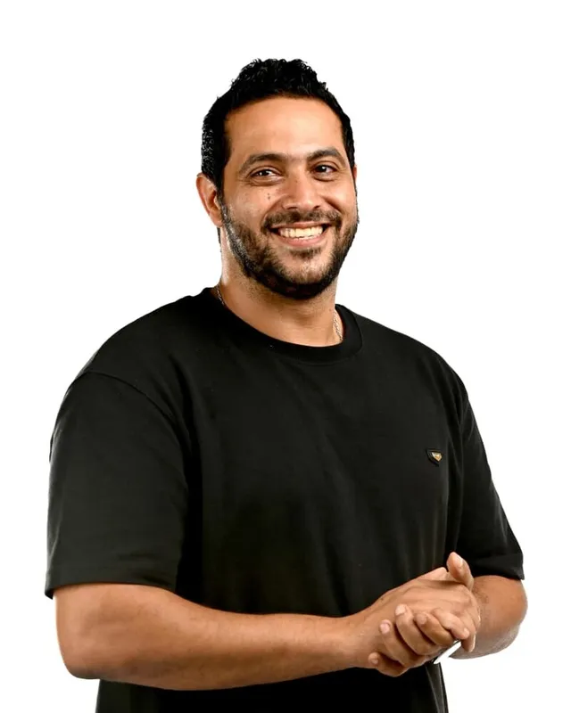
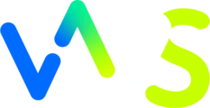

Since childhood
Doing it before it had a name
He noticed what made a person stand out and helped people be seen for it. It was simply what he loved doing.
Rise Personal · A journey in seven chapters
Every reputation starts as raw stone.
Most people polish it online first.
Shape it in the room. Then let the world see.
Be known in the rooms that matter.
Mohamed El Sawaf was a sculptor before he built reputations. Scroll, and watch the block become a figure. Then walk the same path with your own name.
The idea behind every chapter
Three stages, always in this order. Each one builds on the one before it.
Boardrooms, panels, investor meetings and introductions. People meet you and trust you first.
Podcasts, interviews, op-eds and profiles. Credible mentions that a search, a client or an investor will find.
LinkedIn, video and content in your own voice. Online amplifies the reputation you already earned.
The journey
Each chapter keeps what you wrote in the one before. By chapter seven, you leave with your archetype, your words, your story and a 90-day plan.

Your guide
“Shaping something raw until people stop and look. That is the whole job.”
Sawaf graduated in sculpture, worked as an interior engineer, then moved into marketing and business development with public and private-sector clients. He has been helping people be seen since childhood, long before it had a name. He will leave you a note in every chapter.
Sawaf's path · keep scrolling
He noticed what made a person stand out and helped people be seen for it. It was simply what he loved doing.
A sculpture graduate who made statues across Egypt. Shaping something raw until people stop and look became the lesson he still uses.
Public-sector work through Bnsights and large private-sector projects taught him why people buy from people long before they buy from brands.
Helping people unleash their potential changed their position and their income. He turned the passion into his work.
Learned from experts, tested with real clients again and again: discovery, a blueprint for voice and values, then message, identity and reach.
Seven chapters, about twenty minutes. Start with your archetype.
A sculptor never fights the stone. He studies it first. Your archetype is the shape of your brand, and your three words are its grain. Everything you build later has to fit them.
Step 1 · The snapshot
Answer as you are, not as you wish to be seen. The snapshot compares your answers to the twelve archetypes and names your closest match and a secondary one.
Already know yours? Pick it directly. Want the full twenty-statement report and a shareable card? Take the Brand DNA Report.
“Your answers stay in your browser. Nothing is sent anywhere until you decide to talk to us.”Sawaf's note
Tap your primary archetype. Tap a second one to set it as secondary.
Your archetype
Secondary: The Sage
Step 2 · Your three words
Swap any word. Pick exactly three from your archetypes and your strongest traits. Every bio, talk and post you make later should fit them.
Amplifying an undefined position only adds noise. Decide what you stand for first, then make it visible. Three questions, then one sentence.
Step 1 · Three questions
Short answers are fine. Honest ones are better. You will reuse them in every chapter that follows.
“When I sculpted, the hardest cut was the first one. After it, the stone tells you where to go.”Sawaf's note
Step 2 · Your positioning sentence
Fill the blanks right inside the sentence. Keep both halves: the part where you help people see, and the part where you build or deliver.
I help in , and I build .
This is where trust is built: boardrooms, panels, investor meetings and introductions. You will leave this chapter with an intro you can say in thirty seconds and a sentence other people will repeat for you.
Step 1 · Your 30-second introduction
I'm . I . What I've learned is that most people get wrong.
Step 2 · The sentence people repeat
This is the line you want said about you when you are not in the room. Your archetype suggests one. Make it true to you.
“Talk to them. ”
Then ask three people you trust how they describe you today, and close the gap.
Step 3 · Your rooms
Dashed rooms suit your archetype best:
0 rooms chosen · aim for 5 to 10
“People buy from people long before they buy from brands. I learned that in rooms, not on screens.”Sawaf's note
Once the story is clear, put it where a search, a client or an investor will find it: podcasts, interviews, op-eds and profiles. Pitch two or three this quarter with one sharp idea.
Step 1 · Your formats
Step 2 · One idea worth an episode
Why but .
Your pitch, drafted
Swap the host and show names, then send it to two or three shows your target people already listen to. Your positioning sentence from chapter 02 is already in it.
Only now do you go heavy online. Your three words become three content pillars, and a steady rhythm beats any burst of daily posts that stops.
Step 1 · Three pillars from three words
Step 2 · Where and how often
Choose up to two, where your people already are.
“One bold hook and plain text. Your ideas should carry the post, not the emojis.”Sawaf's note
Four weeks, pillars rotating. Colors match the pillar cards above.
Trust builds through a steady rhythm, and burnout flattens a person into an imitation. Know your shadow, choose what belongs to this year, and set a pace you can keep.
Watch your shadow ·
And your second shadow ·
Your wellbeing practice: . Put it in your calendar before the posts.
Now · Next · Later
List what you are working on. Tap an item to move it. Talk about the Later column as a vision, not as current projects, so it adds credibility instead of scattering it.
Example items · replace them with yours“I never did it alone. My partners and I complete the puzzle together. Choose who carries what, so you can keep your pace.”Sawaf's note
You found your stone, carved your position and chose your rooms, your record and your rhythm. Here is the order to do it in, and the brand card that holds it all.
Brand card · built on this journey
Your answers are saved in this browser as you go, so you can leave and come back. Tapping send opens WhatsApp with every answer written out, and you choose whether to send it.
You can walk this path alone. Most of our clients walk it with specialists in strategy, content, media and data, backed by a group of companies that share owners, partners and teams.
Leadership
As a child, Sawaf noticed what made a person stand out and helped people be seen for it. He did not know it was personal branding. It was simply what he loved doing.
He graduated from the sculpture department and made statues across Egypt. Shaping something raw until people stop and look taught him a lesson he now uses on people.
Public-sector work through Bnsights and large private-sector projects for high-end clients showed him why people buy from people long before they buy from brands.
What he had always done was personal branding. Helping people unleash their potential changed their position and their income, so he made it his work.
He learned from the experts, then tested it with real clients again and again: discovery, a blueprint for voice and values, then message, identity and reach.
The team
Archetype, story and message, built from who you are.
Scripts, visuals and video in your voice.
Channels, rhythm and reach that find the right people.
Measurement, dashboards and digital products.
Four specialist teams, one face for you. Each partner brings what the others lack.
Work we don't publish
Every engagement starts under an NDA. We share what changed, never who it changed for.
Unknown to investors
The credible face of the company
Positioned before going to market. Investors judged the founders first, and that fed into how the company was valued.
Respected inside, invisible outside
The board became the brand
Senior managers became the visible faces of the business, in the room and online, and the company's results followed.
Known only by introduction
Recognised public names
Sharp consultants whose work travelled by referral now have networks far wider than the ones they started with.
Known by word of mouth
Known by reputation
A physician's message built around her values and made visible, within the rules her profession sets.
No online presence
A recognised voice
We started with what she stands for, then built her presence on the ground and online.
Want to know more?
Ask for a confidential introduction. NDA first, outcomes never identities, nothing public without your written yes.
Our group
Apps and marketplaces, consulting, AI and brand, with teams across the UAE, Egypt and Portugal working as one.


Before you message us
We position founders, executives and experts so the right people know and trust them. We start in the room, with speaking, introductions and a clear story, then put it on the record and online.
Yes. We work with leaders, founders and teams in Saudi Arabia, Egypt and across the GCC, and with clients in Europe. We work remotely from Dubai and do not operate an office in Saudi Arabia or Egypt.
Marketing built on people rather than logos or products, because people trust people. The most reliable brand a company has is the visible reputation of the people who lead it.
We sign an NDA before we hear the brief, and we never name a client, quote them or show their work without their written approval. Everything you typed on this journey stays in your browser.
Message us on WhatsApp with your brand card from chapter 07. We share scope and pricing after a first conversation about your goals.
One message is enough to start. Our team replies, and we share scope after a first conversation.
WhatsApp: +971 50 683 2835